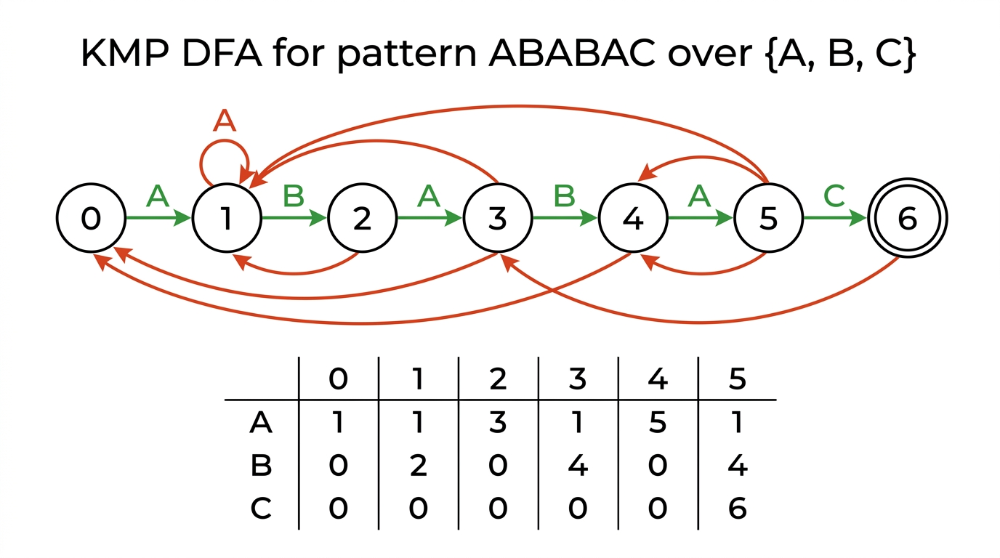
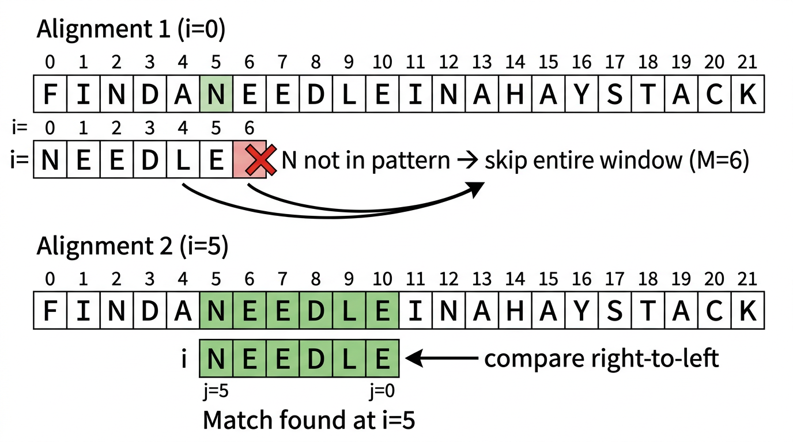

Substring Search — COMP0005 Algorithms¶
Lecture-style notes. Given a pattern of length \(M\) and a text of length \(N\) (with \(M \ll N\)), find the first occurrence of the pattern in the text. Brute force costs \(O(MN)\) worst case; Knuth–Morris–Pratt (KMP) guarantees \(O(N)\) by never backing up in the text; Boyer–Moore achieves sublinear \(\sim N/M\) on average by skipping characters.
1. COMPLETE TOPIC SUMMARIES¶
Brute-force substring search¶
Idea. Slide the pattern across the text one position at a time. At each alignment \(i\), compare the pattern character-by-character with the text starting at position \(i\).
- Match: advance the pattern index \(j\).
- Mismatch: reset \(j = 0\), advance \(i\) by 1, and start over.
- Pattern found: when \(j = M\), the pattern starts at position \(i\).
Pseudocode:
def brute_search(pattern, text):
M, N = len(pattern), len(text)
for i in range(N - M + 1):
for j in range(M):
if text[i + j] != pattern[j]:
break
else: # inner loop completed without break
return i # match at position i
return -1 # not found
Analysis:
| Cost | |
|---|---|
| Best case | \(\sim N\) (mismatch at first character every time) |
| Worst case | \(\sim MN\) (e.g. pattern AAAB in text AAAA...AAAB) |
Backup problem. On a mismatch, brute force rewinds both \(i\) and \(j\). If the text is a stream (can only read forward), brute force needs a buffer of the last \(M\) characters. KMP eliminates this backup entirely.
Knuth–Morris–Pratt (KMP) algorithm¶
Key idea. Build a deterministic finite automaton (DFA) from the pattern. Feed text characters one at a time — the DFA tracks how much of the pattern has been matched so far. On a mismatch, the DFA transitions to the correct fallback state instead of restarting from scratch, so the text pointer never backs up.
DFA representation. A 2D array DFA[c][j]:
- \(j\) is the current state (= number of pattern characters matched so far).
- \(c\) is the next text character.
DFA[c][j]gives the next state.- State \(M\) (= pattern length) is the accept state.
State interpretation. Being in state \(j\) means the last \(j\) characters of the text match the first \(j\) characters of the pattern.
Search pseudocode:
def kmp_search(text, DFA, M):
N = len(text)
j = 0
for i in range(N):
j = DFA[ord(text[i])][j]
if j == M:
return i - M + 1 # match starts here
return -1 # not found
DFA construction. Two types of transitions:
- Match transition:
DFA[pattern[j]][j] = j + 1— the next character matches, advance one state. - Mismatch transition:
DFA[c][j] = DFA[c][X]for all \(c \neq\)pattern[j]— copy the transition from the restart state \(X\).
The restart state \(X\) represents where the DFA would be if it had processed pattern[1..j-1] (the pattern shifted by one). \(X\) is maintained incrementally:
def build_dfa(pattern, R):
M = len(pattern)
DFA = [[0] * M for _ in range(R)]
DFA[ord(pattern[0])][0] = 1
X = 0 # restart state
for j in range(1, M):
for c in range(R):
DFA[c][j] = DFA[c][X] # mismatch: copy from X
DFA[ord(pattern[j])][j] = j + 1 # match: advance
X = DFA[ord(pattern[j])][X] # update restart state
Worked example. Pattern = ABABAC, alphabet = {A, B, C}.
| State j | 0 | 1 | 2 | 3 | 4 | 5 |
|---|---|---|---|---|---|---|
| A | 1 | 1 | 3 | 1 | 5 | 1 |
| B | 0 | 2 | 0 | 4 | 0 | 4 |
| C | 0 | 0 | 0 | 0 | 0 | 6 |
Bold entries are match transitions; the rest are mismatch transitions copied from state \(X\).

{kind=link}
Analysis:
| Cost | |
|---|---|
| DFA construction | \(\sim RM\) time and space |
| Search | \(\sim M + N\) (exactly \(N\) character accesses, no backup) |
KMP is optimal for streaming text because it processes each character exactly once.
Boyer–Moore algorithm (simplified — bad-character rule)¶
Key idea. Align the pattern with the text and compare right-to-left (from the last pattern character backward). On a mismatch, use a precomputed rightmost-occurrence table to skip the pattern forward by more than one position.
Rightmost-occurrence table. For each character \(c\) in the alphabet, right[c] = index of the rightmost occurrence of \(c\) in the pattern, or \(-1\) if \(c\) doesn't appear.
def build_right(pattern, R):
right = [-1] * R
for j in range(len(pattern)):
right[ord(pattern[j])] = j
return right
Skip logic. When text[i+j] != pattern[j]:
- Case 1 (character not in pattern): the mismatched text character doesn't appear anywhere in the pattern. Skip the entire pattern past this position:
i += j + 1. - Case 2 (character in pattern): the mismatched text character appears at position
right[c]in the pattern. Align that occurrence with the text position:skip = j - right[c]. If this would be ≤ 0 (rightmost occurrence is to the right of the mismatch), skip by 1 instead.

{kind=link}
Pseudocode:
def bm_search(pattern, text, right):
M, N = len(pattern), len(text)
i = 0
while i <= N - M:
skip = 0
j = M - 1
while j >= 0:
if pattern[j] != text[i + j]:
skip = max(1, j - right[ord(text[i + j])])
break
j -= 1
if skip == 0:
return i # all characters matched
i += skip
return -1 # not found
Analysis:
| Cost | |
|---|---|
| Preprocessing | \(\sim M + R\) |
| Search (average) | \(\sim N / M\) (sublinear — skips most of the text) |
| Search (worst) | \(\sim MN\) (e.g. pattern = BAAAA...A, text = AAAA...A) |
Why sublinear? When the rightmost pattern character mismatches a text character that isn't in the pattern at all, the entire window slides forward by \(M\) positions, meaning most text characters are never examined.
Algorithm comparison¶
| Algorithm | Preprocessing | Search guarantee | Backup? | Average |
|---|---|---|---|---|
| Brute force | — | \(MN\) | Yes | \(\sim 1.1N\) |
| KMP | \(RM\) | \(N\) | No | \(\sim 1.1N\) |
| Boyer–Moore | \(M + R\) | \(MN\) | Yes | \(\sim N/M\) |
When to use which:
- KMP: streaming text (no backup), guaranteed linear time.
- Boyer–Moore: large alphabet, long pattern — the skip heuristic makes it very fast in practice.
- Brute force: short patterns or when simplicity matters more than worst-case guarantees.
2. EXAM-STYLE QUESTIONS (WITH MODEL ANSWERS)¶
Q1 — Brute-force worst case¶
Question. Give a pattern and text that cause brute-force substring search to take \(\Theta(MN)\) comparisons. Explain why.
Model answer. Pattern = AAAB, text = AAAAAAAAB. At each alignment, brute force matches the first 3 A's before failing on the B, then shifts by 1. With \(M = 4\) and \(N = 9\), there are \(N - M + 1 = 6\) alignments, each requiring up to \(M = 4\) comparisons, giving \(\sim MN\) work. The pattern's repeating prefix ensures maximum wasted comparisons.
Q2 — KMP DFA construction¶
Question. Build the KMP DFA for pattern AABA over alphabet {A, B}. Show the restart state \(X\) at each step.
Model answer.
Initialise: DFA[A][0] = 1, \(X = 0\).
\(j = 1\): pattern[1] = A (match → DFA[A][1] = 2). Mismatch: DFA[B][1] = DFA[B][0] = 0. Update \(X = DFA[A][0] = 1\).
\(j = 2\): pattern[2] = B (match → DFA[B][2] = 3). Mismatch: DFA[A][2] = DFA[A][1] = 2. Update \(X = DFA[B][1] = 0\).
\(j = 3\): pattern[3] = A (match → DFA[A][3] = 4). Mismatch: DFA[B][3] = DFA[B][0] = 0. Update \(X = DFA[A][0] = 1\).
| State | 0 | 1 | 2 | 3 |
|---|---|---|---|---|
| A | 1 | 2 | 2 | 4 |
| B | 0 | 0 | 3 | 0 |
Q3 — Boyer–Moore skip¶
Question. Pattern = NEEDLE, text = FINDANEEDLEINAHAYSTACK. Trace the first three alignments of Boyer–Moore, showing which characters are compared and how much is skipped.
Model answer. right[N]=0, right[E]=5, right[D]=3, right[L]=4. Pattern length \(M = 6\).
Alignment 1 (\(i = 0\)): compare text[5] = 'N' with pattern[5] = 'E'. Mismatch. right[N] = 0, skip = max(1, 5 - 0) = 5. Set \(i = 5\).
Alignment 2 (\(i = 5\)): compare text[10] = 'E' with pattern[5] = 'E'. Match. Compare text[9] = 'L' with pattern[4] = 'L'. Match. Continue matching rightward-to-left through text[8]='D', text[7]='E', text[6]='E', text[5]='N'. All match. \(j = 0\), skip = 0 → match found at \(i = 5\).
Q4 — KMP vs Boyer–Moore¶
Question. Explain one scenario where KMP is preferable to Boyer–Moore, and one where Boyer–Moore is preferable.
Model answer. KMP preferred: when the text is a stream that can only be read forward (e.g. network packets). KMP never backs up in the text — it processes each character exactly once. Boyer–Moore compares right-to-left within the window, which requires random access to text characters already passed.
Boyer–Moore preferred: searching for a long pattern in a large-alphabet text (e.g. an English word in a document). The bad-character heuristic frequently skips the pattern by \(M\) positions, giving \(\sim N/M\) average time — much faster than KMP's \(\sim N\).
Q5 — Why right-to-left in Boyer–Moore?¶
Question. Why does Boyer–Moore compare the pattern right-to-left rather than left-to-right?
Model answer. Comparing right-to-left lets the algorithm skip large portions of the text on a mismatch. If the rightmost pattern character doesn't match a text character that isn't in the pattern at all, the entire \(M\)-character window can jump forward. Left-to-right comparison (as in brute force) would discover mismatches only after examining characters that provide no useful skip information, since the remaining unexamined pattern characters could still match.